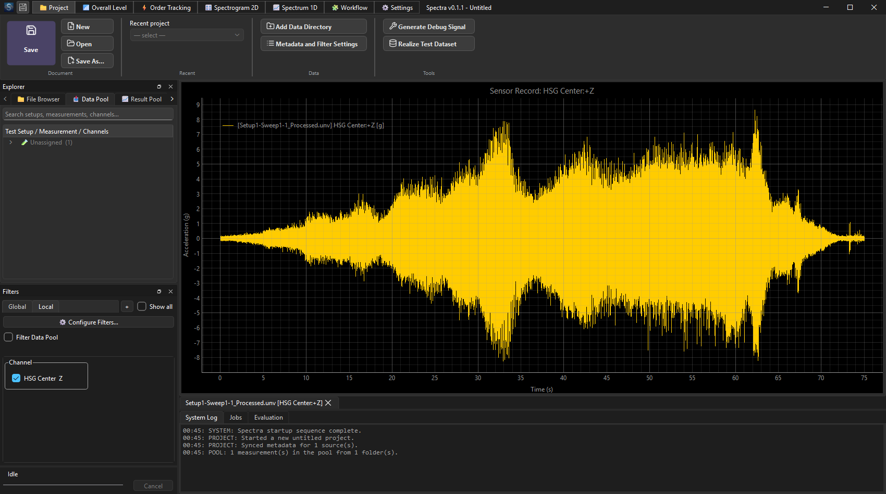
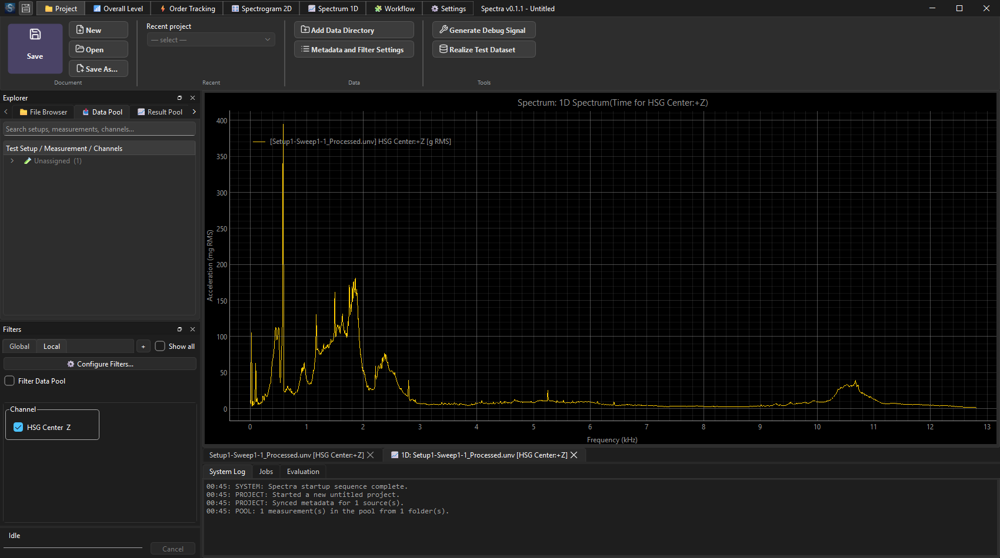
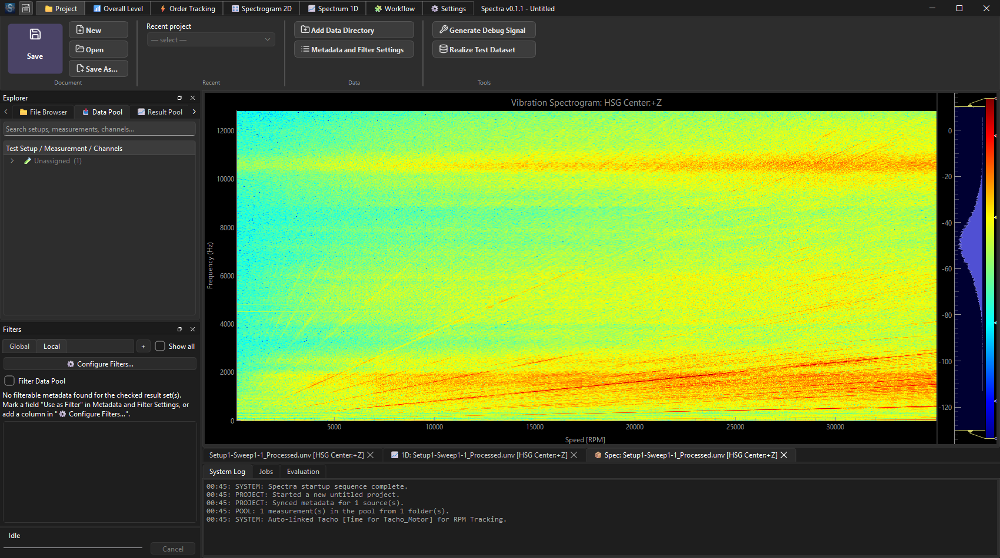
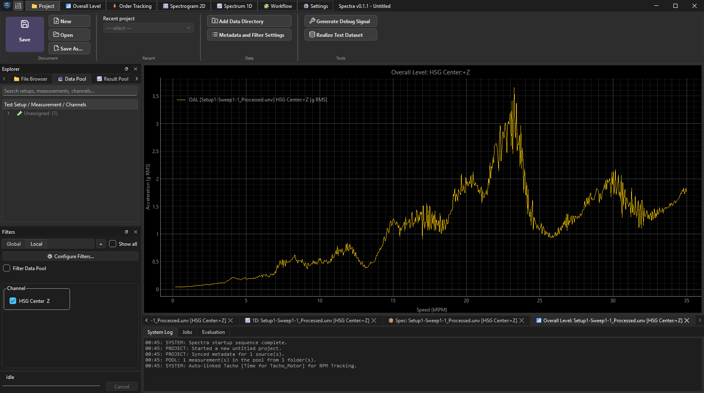
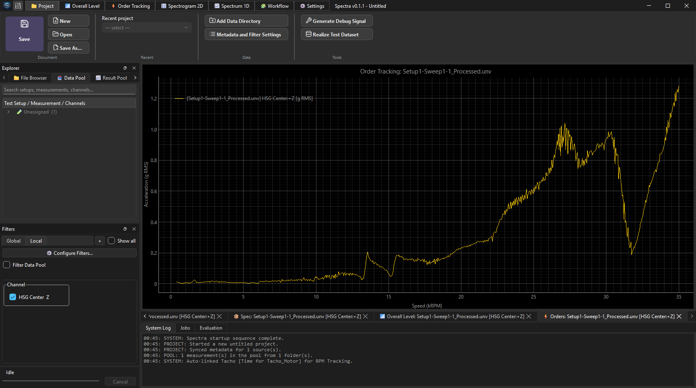
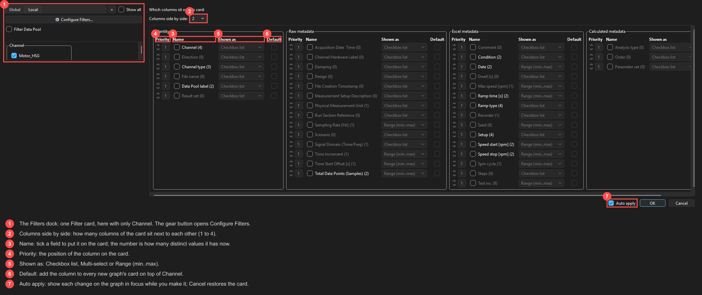
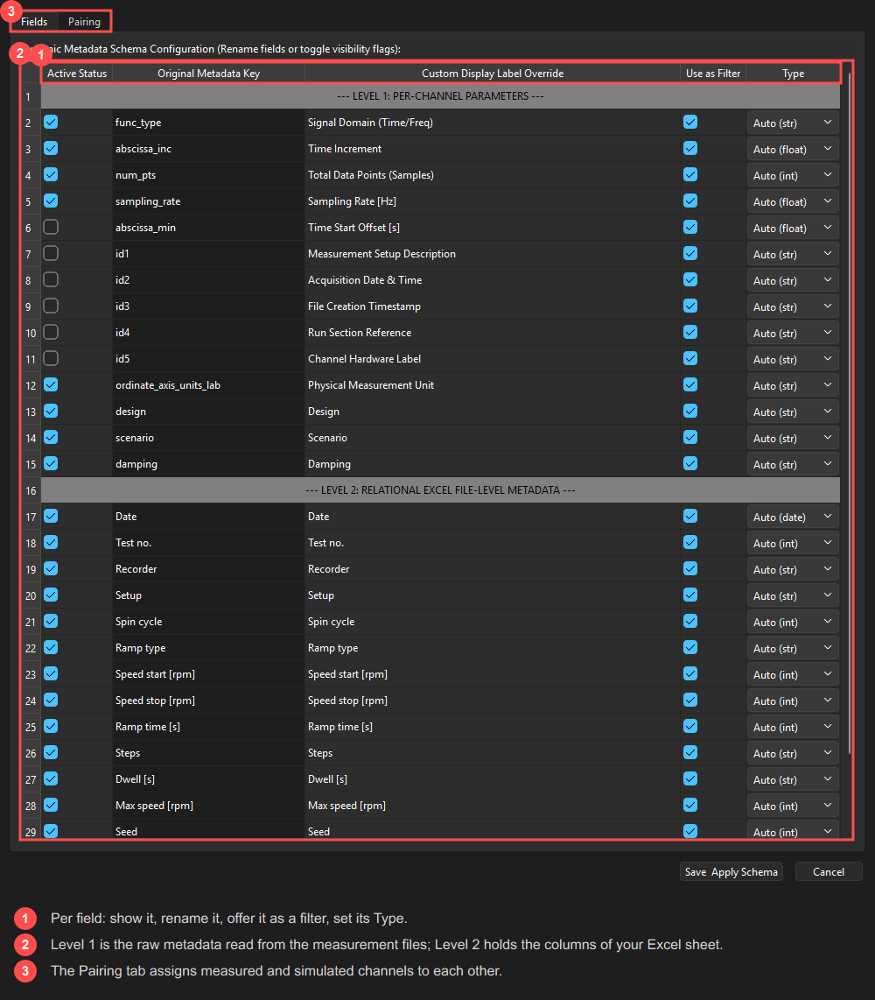
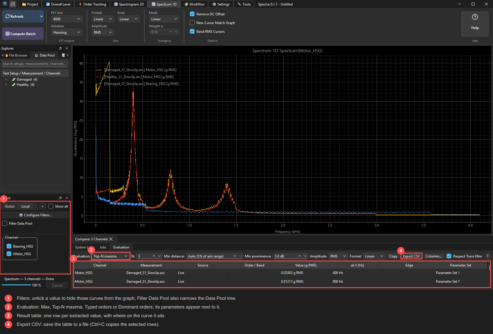

Raw data
Plot time signals and tacho/RPM channels. Cursors, zoom, several channels in one graph.

Spectrum
Averaged FFT with your choice of window, overlap and averaging; peak, RMS, PSD and dB amplitude formats.

Spectrogram
Frequency over time or RPM — see run-ups and run-downs at a glance.

Overall Level
Level of a frequency band versus RPM or time — one number per step that you can trend.

Order tracking
Order cuts that follow the tacho. Overall decomposition splits the Overall Level into the chosen orders plus the residual.

Bulk computation
Compute whole sets of measurements in the background. Results are cached in HDF5, so reopening is instant.

Filtering
Show or hide curves by channel, order, file, metadata and parameter set. Global or per-graph filter cards.

Metadata & pairing
Attach Excel metadata and pair channels, then filter and compare by your own columns.

Evaluation tables
Maximum, top-N peaks and dominant orders extracted into a table, exportable to CSV.

Workflow pre-alpha
Build a calculation as a block diagram and run it over a whole selection.